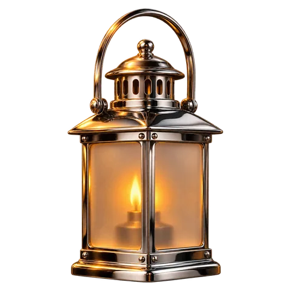
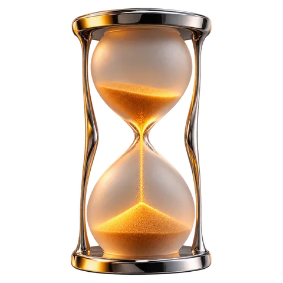
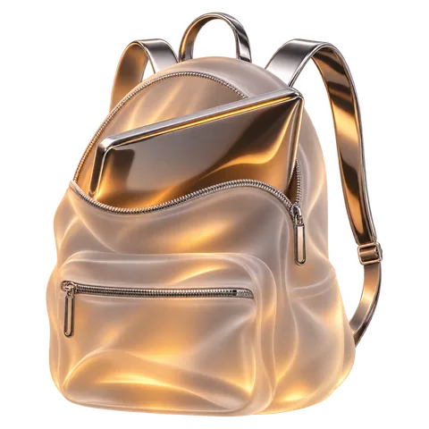
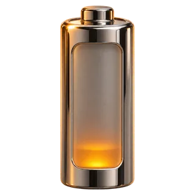
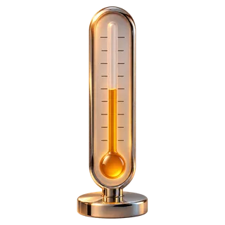
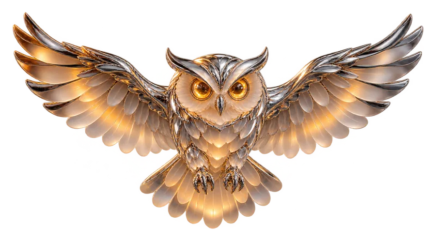

Раз в минуту
Сторож
Маленький скрипт проверяет сессию каждую минуту. Если Sova упала или Мак перезагрузился посреди сессии, сторож возвращает сон. Чужие настройки сна он не трогает.
Экран темнеет, Мак не блокируется, и ИИ-агенты работают даже в рюкзаке.

Клик по глазу в строке меню, дальше «Не давать спать»: от 30 минут до 24 часов или «Пока не остановлю». Глаз открывается, в меню идёт обратный отсчёт.

Мак продолжает работать. Sova опускает яркость встроенного экрана в ноль, поэтому Мак не блокируется и агенты видят рабочий стол. Любое нажатие или открытая крышка возвращают яркость.
Встроенный экран
Крышка закрыта, агенты работают
Время вышло, сессия закончилась, приходит уведомление. Закончить раньше можно кнопкой «Остановить» в меню.
Sova сейчас
Сессия закончилась. Сон работает как обычно.
Сон вернётся, даже если Sova упала, Мак перезагрузился посреди сессии, батарея садится или Мак перегрелся.

Маленький скрипт проверяет сессию каждую минуту. Если Sova упала или Мак перезагрузился посреди сессии, сторож возвращает сон. Чужие настройки сна он не трогает.

15%
Заряд ниже 15% и зарядки нет: сессия заканчивается сама, приходит уведомление.

Мак перегрелся: сессия заканчивается сама, приходит уведомление.
Откройте Терминал, вставьте строку и нажмите Enter. Один раз Мак спросит пароль в системном окне.
git clone https://github.com/ungurenko/sova.git && cd sova && ./scripts/install.sh
Удалить: ./scripts/uninstall.sh в той же папке. Он убирает всё, включая правило sudoers.

Закройте крышку и уходите. Сова посторожит, а сон вернётся сам.